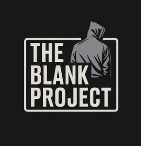

Trade Mark Journal No.2025/043 24 October 2025
UK00004277098 13 October 2025 (18,25,35)

- Class 18
- Bags; Tote bags; Luggage bags; Duffle bags; Duffel bags; Carry-on bags; Toiletry bags; Bags for clothes; Drawstring bags; Carry-all bags; Belt bags and hip bags; Carrying bags; Luggage, bags, wallets and other carriers; Cloth bags; Bucket bags; Sling bags; Leather bags; Canvas bags; Duffel bags for travel; Clutch bags; Shoe bags; Kit bags; Messenger bags; Travel bags; Bags for travel; Leather bags and wallets; Garment bags; Shoulder bags; Waterproof bags; Makeup bags; Camping bags; Towelling bags; Courier bags; Bags for campers; Roll bags; Gym bags; Hand bags; Bags [envelopes, pouches] of leather, for packaging; Bags [envelopes, pouches] for packaging of leather; Bags [envelopes, pouches] of leather for packaging; Travelling bags; Flight bags; Beach bags; Bags for climbers; Boot bags; Hiking bags; Suit bags; Hunting bags.
- Class 25
- Clothing; t-shirts; tracksuits; joggers; hoodies; shirts; pants; dresses; socks; denim jackets; suede jackets; leather jackets; athletic jackets; coats; scarves; gloves; mittens; waistcoats; sweaters; sweatshirts; underwear; ties; neckties; swimsuits; tank tops; camisoles; blouses; knitwear; knit tops; vests; parkas; capes; clothing jerseys, hooded pullovers; sportswear; blazers; suits; pants; trousers; shorts; jorts; baggy jorts; lounge wear; sleepwear; night gowns; pyjamas; bathrobes; headwear; Clothing; Jackets [clothing]; Ready-to-wear clothing; Clothes; Jerseys [clothing]; Denims [clothing]; Shorts [clothing]; Windproof clothing; Hoods [clothing]; Rainproof clothing; Waterproof clothing; Casual clothing; Jackets being sports clothing; Bottoms [clothing]; Clothing for leisure wear; Ready-made clothing; Leisure clothing; Clothing for sports; Sports clothing; Athletic clothing; Weatherproof clothing; Beach clothing.
- Class 35
- Retail services and online retail services for the sale of bags, duffel bags, tote bags, side bags, backpacks, clothing, t-shirts, shirts, tracksuits, joggers, hoodies, pants, dresses, socks, jackets, denim jackets, suede jackets, leather jackets, athletic jackets, coats, scarves, gloves, mittens, waistcoats, sweaters, sweatshirts, underwear, ties, neckties, swimsuits, tank tops, camisoles, blouses, knitwear, namely, knit tops, vests, parkas, capes, clothing jerseys, hooded pullovers, sportswear, blazers, suits, pants, trousers, shorts, lounge wear, sleepwear, night gowns, pyjamas, bathrobes, headwear; advertising; marketing; sales promotion for others; distribution of advertising materials; dissemination of advertising and promotional materials; modelling services for advertising or sales promotion; business management advisory services; providing an online marketplace for buyers and sellers of products and services; organization of exhibitions for commercial or advertising purposes; indexing the web for commercial or advertising purposes; business auditing; information, advisory and consultancy services relating to the above mentioned services, all of the above mentioned services also provided online via a computer database or the Internet; Retail services connected with the sale of clothing and clothing accessories; Online marketing; Online advertising; Promotion [advertising] of business; Online advertisements; Sales promotion; Online ordering services; Online retail store services relating to clothing; Promotional marketing; Online retail store services in relation to clothing.
InToto Limited